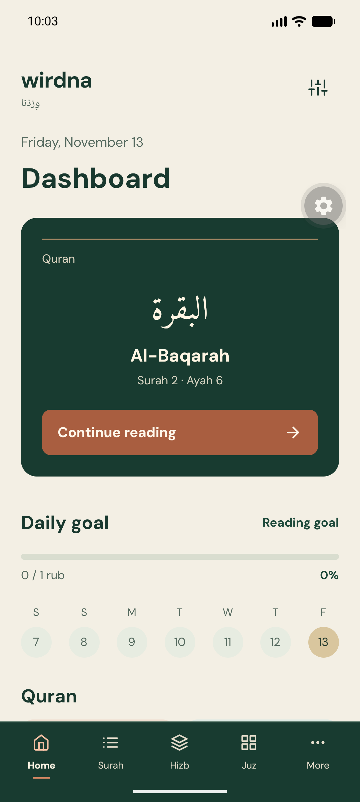
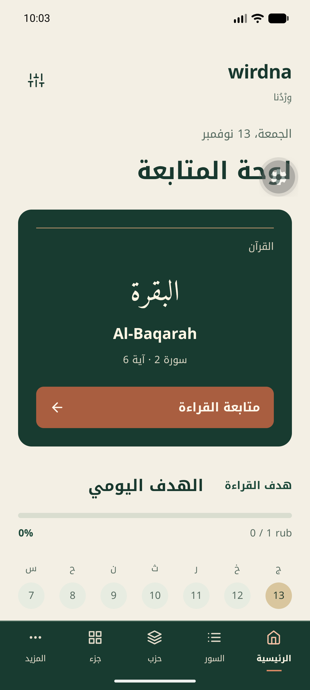

First native implementation
Android development-build captures in English and Arabic, showing actual saved data. These predate the final RTL section alignment and unit-label adjustment; the floating gear is development chrome. They do not verify iOS.
View the three concept references ↗

